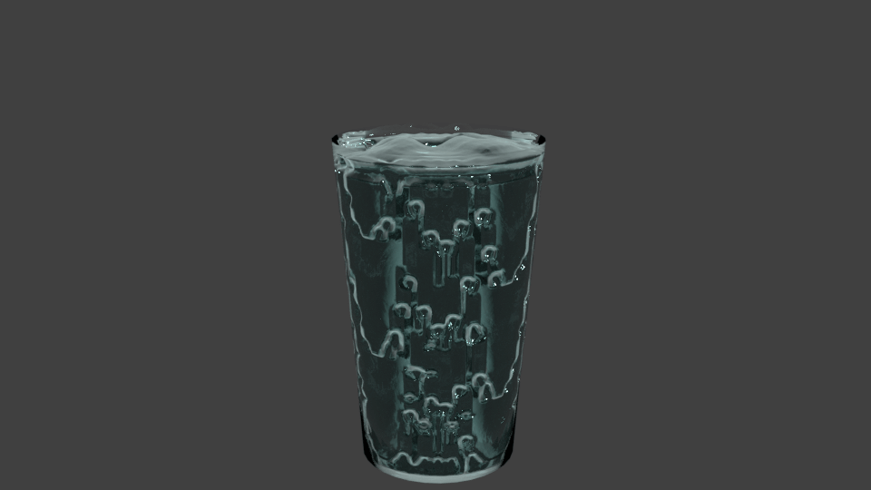

Water Vapour
| Water Vapour | ||
|---|---|---|
|
||
| Info | ||
|
Water evaporates from land and sea and falls as rain or snow. As a consequence of the prevailing climate in any place, the quantity retained in the atmosphere as water vapor differs significantly in just hours and days. |
||
|
Using latest NASA satellite information, scientists have estimated the heat-trapping impact of water in the atmosphere more accurately than ever, validating the gas's position as a critical element of climate change. |
||
Why Water Vapour?
Water vapor is the atmosphere's most plentiful greenhouse gas. Water vapor is also an efficient greenhouse gas as it absorbs and radiates long-wave radiation back to the ground, thus contributing to warming. However, water vapor remains in the atmosphere for a much shorter period of time compared to other greenhouse gases. Water vapor will usually remain in the atmosphere for days (before precipitation) while other greenhouse gasses, such as carbon dioxide or methane, will remain in the atmosphere for a much longer period of time (ranging from years to centuries), thus contributing to long-term warming. Human activities do not directly add to water vapour in the atmosphere, however as the climate warms, air temperatures increase, more water and soil evaporation happens, which increases the humidity content of the atmosphere. Therefore, the rise in atmospheric water vapor contributes to warming even more and increases the greenhouse effect.
Below is a model of a glass of water that I made:

What has been done to limit water vapour?
By reducing water vapor you have less long-wave radiation coming back down to warm the troposphere. However, as human intervention cannot control water vapor as it is merely a result of its surroundings, scientists must concentrate on what initially causes air temperatures to increase. Heat from other greenhouse gases causes atmospheric warming, leading to an increase in water evaporation and compounding the greenhouse effect. Therefore, limiting the other greenhouse gases is the best fix for limiting water vapour.